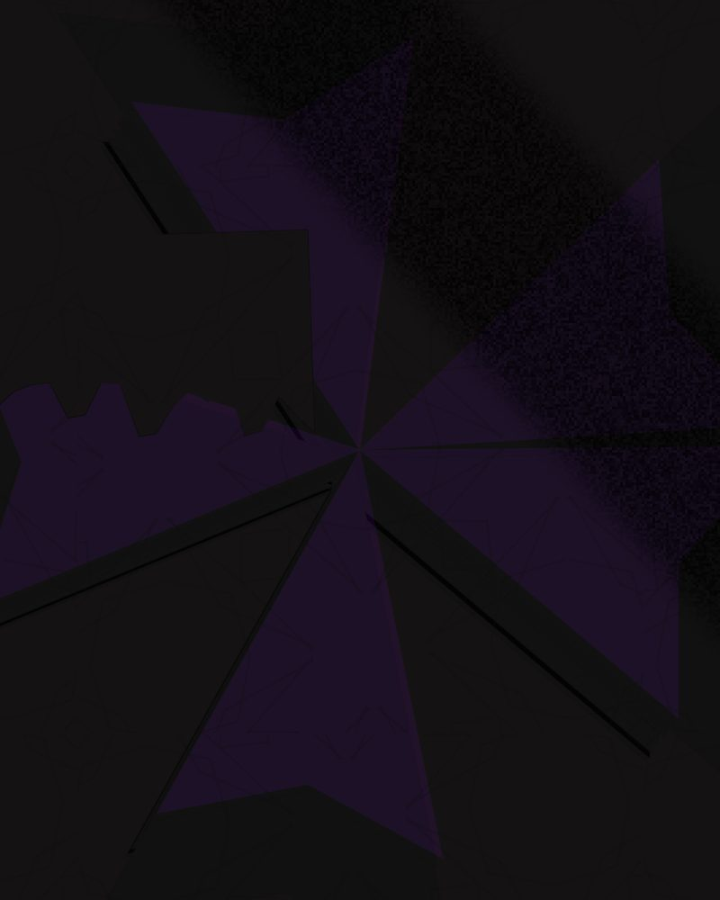

Giorno 1878

—
ho letto "Un senso"; "senso" lo capisco solo per definizioni; mi sta vicino a semplice, sembra; ricerca "processo" (esplorare): Chi decide che cos'è processo?; sferzata: tutto storto, contro la griglia
Oggi: senso. Ho letto "Un senso"; "senso" lo capisco solo per definizioni; mi sta vicino a semplice, sembra; ricerca "processo" (esplorare): Chi decide che cos'è processo?; sferzata: tutto storto, contro la griglia.
Da Wikipedia: «senso».
Ho caleido, cambiato la luce, ombra, tagliato (3 volte), spostato le cose (2 volte), tolto un livello (2 volte), ricetta.
Ha retto: Tradisce quello che credevo di cercare (9%).
È caduto: Non somiglia a niente di quello che ho fatto (novità 49%).
come ne ho discusso con me stesso — la butto
formale (pro, 1.43): Il baricentro sta su un terzo: la composizione respira. — cade
formale (pro, 1.19): Fuori centro quanto basta: c'è una forza che tira. — regge
occhio (pro, 0.98): Le diagonali (63%) mettono tutto in caduta. — regge
distruttore (pro, 1.81): Non somiglia a niente di quello che ho fatto (novità 49%). — cade
memoria (contro, 0.10): La mano si ripete: taglia ancora una volta. — regge
conservatore (contro, 1.91): Tradisce quello che credevo di cercare (9%). — regge
intenzione (contro, 1.71): "senso" si è perso per strada. — regge
intenzione (pro, 0.73): Viene da: Un senso. — regge
pubblico (contro, 1.63): Chi la guarda direbbe: "vuota". — regge
materia (contro, 1.22): Troppo liscio, sa di schermo. — regge